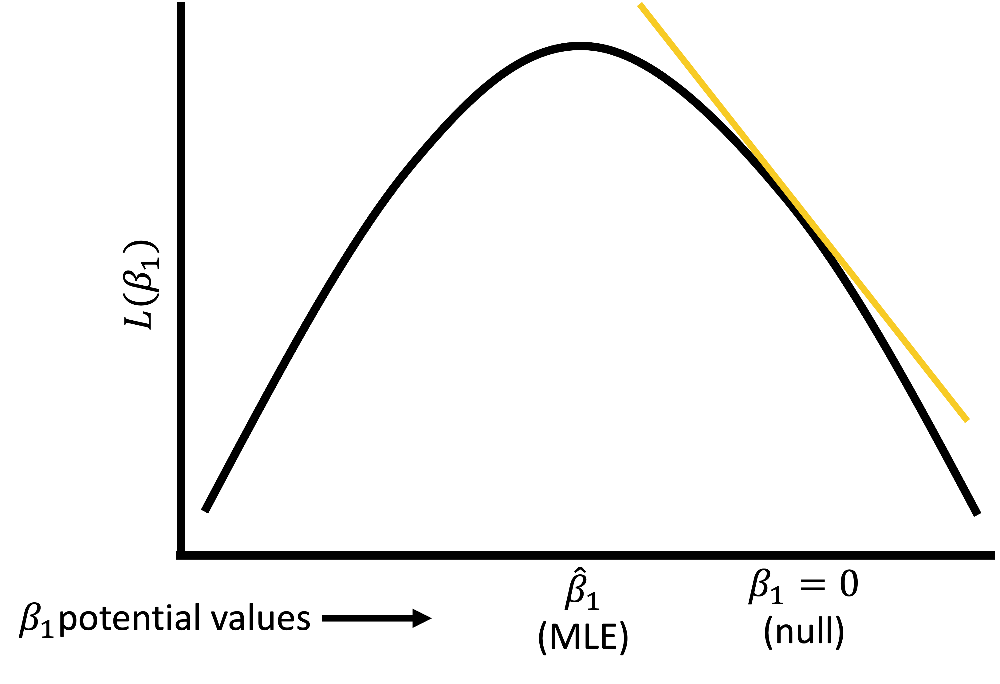

Lesson 6: Tests for GLMs using Likelihood function
I’ve never explicitly said this…
- Because we are in a public health class, we are often analyzing data with sensitive outcomes
- If you ever need a moment in class because of our topic, feel free to just step out or leave and privately view the lecture
- If you need extra time on your assignments because you have an emotional response to lectures/homework/lab, just let me know! Extenuating circumstance!
Learning Objectives
Use the Wald test to test the significance of an estimated coefficient through confidence intervals.
Articulate how the Wald test, Score test, and likelihood ratio test (LRT) calculates a test statistic using the likelihood function.
Use the Likelihood ratio test to test the significance of estimated coefficients through formal hypothesis testing.
Understand when and how to use each test: Wald, Score, and Likelihood ratio
Connection between tests in linear models and GLMs
In linear regression, we used ordinary least squares (OLS) to find the best fit model, so we could use the following tests:
- t-test for single coefficients
- F-test for single coefficients or groups of coefficients
These tests hinge on the Mean Squared Error (MSE) which we minimized in OLS and the LINE assumptions
In GLMs, when we use maximum likelihood estimation (MLE), we cannot use t-tests or F-tests
- Because we are now using likelihood to find our estimates (not OLS)
But we have parallel tests in MLE!!
t-test ⟶ Wald test
F-test ⟶ Likelihood ratio test
Revisit the likelihood function
Likelihood function: expresses the probability of the observed data as a function of the unknown parameters
- Function that enumerates the likelihood (similar to probability) that we observe the data across the range of potential values of our coefficients
We often compare likelihoods to see what estimates are more likely given our data
Plot to right is a simplistic view of likelihood
- I have flattened the likelihood that would be a function of \(\beta_0\) and \(\beta_1\) into a 2D plot (instead of 3D: \(\beta_0\) vs. \(\beta_1\) vs. \(L(\beta_0, \beta_1)\))
I use \(L\) to represent the log-likelihood and \(l\) to represent the likelihood

Introduction to three tests in GLM
To introduce these three tests, we will work on a single coefficient
- To be clear: the Likelihood ratio test can be extended to more coefficients
Let’s say we fit a GLM using MLE
- We will continue to use logistic regression as our working example
Now we want to run a hypothesis test for an individual coefficient \(j\):
- \(H_0: \beta_j = 0\)
- \(H_1: \beta_j \neq 0\)
Three potential tests that we use with a Likelihood function are:
- Wald test
- Score test
- Likelihood ratio test (LRT)
Poll Everywhere Question 1
Revisit previous model with late stage BC diagnosis and age
- Simple logistic regression model: \[\text{logit}(\pi(Age)) = \beta_0 + \beta_1 \cdot Age\]
Don’t forget: \(\pi(Age) = P(Y=1 | Age)\)
bc_reg = glm(Late_stage_diag ~ Age_c, data = bc, family = binomial)
summary(bc_reg)
Call:
glm(formula = Late_stage_diag ~ Age_c, family = binomial, data = bc)
Coefficients:
Estimate Std. Error z value Pr(>|z|)
(Intercept) -0.989422 0.023205 -42.64 <2e-16 ***
Age_c 0.056965 0.003204 17.78 <2e-16 ***
---
Signif. codes: 0 '***' 0.001 '**' 0.01 '*' 0.05 '.' 0.1 ' ' 1
(Dispersion parameter for binomial family taken to be 1)
Null deviance: 11861 on 9999 degrees of freedom
Residual deviance: 11510 on 9998 degrees of freedom
AIC: 11514
Number of Fisher Scoring iterations: 4Learning Objectives
Use the Wald test to test the significance of an estimated coefficient through confidence intervals.
Articulate how the Wald test, Score test, and likelihood ratio test (LRT) calculates a test statistic using the likelihood function.
Use the Likelihood ratio test to test the significance of estimated coefficients through formal hypothesis testing.
Understand when and how to use each test: Wald, Score, and Likelihood ratio
Wald test (1/3)
Very similar to a t-test!
- But slightly different because it based in our likelihood function
Assumes test statistic W follows a standard normal distribution under the null hypothesis
Test statistic: \[W=\frac{{\hat{\beta}}_j}{se({\hat{\beta}}_j)}\sim N(0,1)\]
- where \(\widehat{\beta}_j\) is a MLE of coefficient \(j\)
95% Wald confidence interval: \[{\hat{\beta}}_1\pm1.96 \cdot SE_{{\hat{\beta}}_j}\]
The Wald test is a routine output in R (
summary()ofglm()output)- Includes \(SE_{{\hat{\beta}}_j}\) and can easily find confidence interval with
tidy()
- Includes \(SE_{{\hat{\beta}}_j}\) and can easily find confidence interval with
Wald test (2/3)
Wald test (3/3)
Wald test procedure with confidence intervals
Set the level of significance \(\alpha\)
Specify the null ( \(H_0\) ) and alternative ( \(H_A\) ) hypotheses
- In symbols
- In words
- Alternative: one- or two-sided?
Calculate the confidence interval and determine if it overlaps with null
- Overlap with null (usually 0 for coefficient) = fail to reject null
- No overlap with null (usually 0 for coefficient) = reject null
Write a conclusion to the hypothesis test
- What is the estimate and its confidence interval?
- Do we reject or fail to reject \(H_0\)?
- Write a conclusion in the context of the problem
Example: BC diagnosis and age
Wald test for age coefficient
Interpret the coefficient for age in our model of late stage breast cancer diagnosis.
Needed steps:
- Set the level of significance \(\alpha\)
- Specify the null ( \(H_0\) ) and alternative ( \(H_A\) ) hypotheses
- Calculate the confidence interval and determine if it overlaps with null
- Write a conclusion to the hypothesis test
Note
I don’t want us to get fixated on this interpretation. This is more to introduce the process, BUT it’s MUCH better to interpret the coefficient in terms of OR (next class).
Example: BC diagnosis and age
Wald test for age coefficient
Interpret the coefficient for age in our model of late stage breast cancer diagnosis.
- Set the level of significance \(\alpha\) \[\alpha=0.05\]
- Specify the null ( \(H_0\) ) and alternative ( \(H_A\) ) hypotheses
\[\begin{aligned} H_0 &: \beta_{Age} = 0 \\ H_1 &: \beta_{Age} \neq 0 \\ \end{aligned}\]
Example: BC diagnosis and age
Wald test for age coefficient
Interpret the coefficient for age in our model of late stage breast cancer diagnosis.
- Calculate the confidence interval and determine if it overlaps with null
library(epiDisplay)Loading required package: foreignLoading required package: survival
Attaching package: 'survival'The following object is masked from 'package:boot':
amlLoading required package: MASS
Attaching package: 'MASS'The following object is masked from 'package:gtsummary':
selectThe following object is masked from 'package:rstatix':
selectThe following object is masked from 'package:dplyr':
selectLoading required package: nnet
Attaching package: 'epiDisplay'The following object is masked from 'package:lmtest':
lrtestThe following object is masked from 'package:ggplot2':
alphabc_reg = glm(Late_stage_diag ~ Age_c, data = bc, family = binomial)
tidy(bc_reg, conf.int=T) %>% gt() %>% tab_options(table.font.size = 35) %>%
fmt_number(decimals = 3)| term | estimate | std.error | statistic | p.value | conf.low | conf.high |
|---|---|---|---|---|---|---|
| (Intercept) | −0.989 | 0.023 | −42.637 | 0.000 | −1.035 | −0.944 |
| Age_c | 0.057 | 0.003 | 17.780 | 0.000 | 0.051 | 0.063 |
Example: BC diagnosis and age
Wald test for age coefficient
Interpret the coefficient for age in our model of late stage breast cancer diagnosis.
- Write a conclusion to the hypothesis test
For every one year increase in age, the log-odds of late stage breast cancer diagnosis increases 0.057 (95% CI: 0.051, 0.063).
There is sufficient evidence that age an breast cancer diagnosis are associated.
Note
I don’t want us to get fixated on this interpretation. This is more to introduce the process, BUT it’s MUCH better to interpret the coefficient in terms of OR (next class).
Poll Everywhere Question 2
Learning Objectives
- Use the Wald test to test the significance of an estimated coefficient through confidence intervals.
- Articulate how the Wald test, Score test, and likelihood ratio test (LRT) calculates a test statistic using the likelihood function.
Use the Likelihood ratio test to test the significance of estimated coefficients through formal hypothesis testing.
Understand when and how to use each test: Wald, Score, and Likelihood ratio
Score test
Score test does not require the computation of MLE for \(\beta_1\), while both likelihood test and Wald test does
- Only need to know \(\beta_1\) under the null
Score test is based on the first and second derivatives of the log-likelihood under the null hypothesis: \[S=\frac{\sum_{i=1}^{n}{x_i(y_i-\bar{y})}}{\sqrt{\bar{y}(1-\bar{y})\sum_{i=1}^{n}\left(x_i-\bar{x}\right)^2}} \sim N(0,1)\]
Score test

Learning Objectives
- Use the Wald test to test the significance of an estimated coefficient through confidence intervals.
Articulate how the Wald test, Score test, and likelihood ratio test (LRT) calculates a test statistic using the likelihood function.
Use the Likelihood ratio test to test the significance of estimated coefficients through formal hypothesis testing.
- Understand when and how to use each test: Wald, Score, and Likelihood ratio
Likelihood ratio test (1/3)
Likelihood ratio test answers the question:
- For a specific covariate, which model tell us more about the outcome variable: the model including the covariate or the model omitting the covariate?
- Aka: Which model is more likely given our data: model including the covariate or the model omitting the covariate?
Test a single coefficient by comparing different models
- Very similar to the F-test
Important: LRT can be used conduct hypothesis tests for multiple coefficients
- Just like F-test, we can test a single coefficient, continuous/binary covariate, multi-level covariate, or multiple covariates
Likelihood ratio test (2/3)
- To assess the significance of a continuous/binary covariate’s coefficient in the simple logistic regression, we compare the deviance (D) with and without the covariate \[G=D\left(\text{model without } x\right)-D\left(\text{model with } x\right)\]
For a continuous or binary variable, this is equivalent to test: \(H_0: \beta_j = 0\) vs. \(H_1: \beta_j \neq 0\)
Test statistic for LRT: \[G=-2ln\left[\frac{\text{likelihood without } x}{\text{likelihood with } x}\right]=2ln\left[\frac{l\left({\hat{\beta}}_0,{\hat{\beta}}_1\right)}{l({\hat{\beta}}_0)}\right]\]
Likelihood ratio test (2/3)
- To assess the significance of a continuous/binary covariate’s coefficient in the simple logistic regression, we compare the deviance (D) with and without the covariate \[G=D\left(\text{model without } x\right)-D\left(\text{model with } x\right)\]
For a continuous or binary variable, this is equivalent to test: \(H_0: \beta_j = 0\) vs. \(H_1: \beta_j \neq 0\)
Test statistic for LRT: \[G=-2ln\left[\frac{\text{likelihood without } x}{\text{likelihood with } x}\right]=2ln\left[\frac{l\left({\hat{\beta}}_0,{\hat{\beta}}_1\right)}{l({\hat{\beta}}_0)}\right]\]

LRT: what is Deviance?
Deviance: quantifies the difference in likelihoods between a fitted and saturated model
Fitted model:
- Your proposed fitted model
Saturated model:
- A model that contains as many parameters as there are data points = perfect fit
- Basically every individual has their own covariate
- Perfect fit = maximum possible likelihood
- A model that contains as many parameters as there are data points = perfect fit
- All fitted models will have likelihood less than saturated model

LRT: what is Deviance?
The deviance is mathematically defined as: \[D=-2[L_{\text{fitted}}-L_{\text{saturated}}]\]
An alternative way to write it is: \[D=-2ln\left[\frac{\text{likelihood of the fitted model}}{\text{likelihood of the saturated model}}\right]\]
Using ‘-2’ is to make the deviance follow a chi-square distribution
Deviance to Likelihood Ratio Test
- In the LRT, we are NOT comparing the likelihood of saturated model to the fitted model
We ARE comparing the Deviance of the model with x and the model without x
- We just use the saturated model to calculate Deviance
- Both are considered fitted models with their own respective Deviance
- So our LRT is: \[G=D\left(\text{model without } x\right)-D\left(\text{model with } x\right)\]
For reference
\[ \begin{aligned} G&=D\left(\text{model without } x\right)-D\left(\text{model with }x\right) \\ G&=-2ln\left[\frac{\text{likelihood of model without } x}{\text{likelihood of saturated model}}\right]-\left(-2ln\left[\frac{\text{likelihood of model with } x}{\text{likelihood of saturated model}}\right]\right) \\ G&=-2ln\left[\frac{\text{likelihood of model without } x}{\text{likelihood of saturated model}}\times\frac{\text{likelihood of saturated model}}{\text{likelihood of model with } x}\right] \\ G&=-2ln\left[\frac{\text{likelihood of model without } x}{\text{likelihood of model with }}\right] \\ G&=2ln\left[\frac{l\left({\hat{\beta}}_0,{\hat{\beta}}_1\right)}{l({\hat{\beta}}_0)}\right] \end{aligned}\]
Poll Everywhere Question 3
Likelihood ratio test (2/3)
- To assess the significance of a continuous/binary covariate’s coefficient in the simple logistic regression, we compare the deviance (D) with and without the covariate \[G=D\left(\text{model without } x\right)-D\left(\text{model with } x\right)\]
For a continuous or binary variable, this is equivalent to test: \(H_0: \beta_j = 0\) vs. \(H_1: \beta_j \neq 0\)
Test statistic for LRT: \[G=-2ln\left[\frac{\text{likelihood without } x}{\text{likelihood with } x}\right]=2ln\left[\frac{l\left({\hat{\beta}}_0,{\hat{\beta}}_1\right)}{l({\hat{\beta}}_0)}\right]\]

Likelihood ratio test (3/3)
Under the null hypothesis, with adequate sample size, LRT statistic follows a chi-square distribution: \[G \sim \chi^2(df)\]
- \(df = (\# \text{coefficients in larger model}) − (\# \text{coefficients in smaller model})\)
- If we are testing a single coefficient, like age, then \(df=1\)
Likelihood ratio test
LRT procedure
Set the level of significance \(\alpha\)
Specify the null ( \(H_0\) ) and alternative ( \(H_A\) ) hypotheses
- In symbols
- In words
- Alternative: one- or two-sided?
Calculate the test statistic and p-value
Write a conclusion to the hypothesis test
- Do we reject or fail to reject \(H_0\)?
- Write a conclusion in the context of the problem
Example: BC diagnosis and age
LRT
Determine if the model including age is more likely than model without age. Aka: Is age associated with late stage breast cancer diagnosis?
Needed steps:
- Set the level of significance \(\alpha\)
- Specify the null ( \(H_0\) ) and alternative ( \(H_A\) ) hypotheses
- Calculate the test statistic and p-value
- Write a conclusion to the hypothesis test
Example: BC diagnosis and age
LRT
Determine if the model including age is more likely than model without age. Aka: Is age associated with late stage breast cancer diagnosis?
- Set the level of significance \(\alpha\) \[\alpha=0.05\]
- Specify the null ( \(H_0\) ) and alternative ( \(H_A\) ) hypotheses
\[\begin{aligned} H_0 &: \beta_{Age} = 0 \\ H_1 &: \beta_{Age} \neq 0 \\ \end{aligned}\]
Example: BC diagnosis and age
LRT
Determine if the model including age is more likely than model without age. Aka: Is age associated with late stage breast cancer diagnosis?
- Calculate the test statistic and p-value
library(lmtest)
bc_age = glm(Late_stage_diag ~ Age_c, data = bc, family = binomial)
bc_int = glm(Late_stage_diag ~ 1, data = bc, family = binomial)
lmtest::lrtest(bc_age, bc_int)Likelihood ratio test
Model 1: Late_stage_diag ~ Age_c
Model 2: Late_stage_diag ~ 1
#Df LogLik Df Chisq Pr(>Chisq)
1 2 -5754.8
2 1 -5930.5 -1 351.27 < 2.2e-16 ***
---
Signif. codes: 0 '***' 0.001 '**' 0.01 '*' 0.05 '.' 0.1 ' ' 1Example: BC diagnosis and age
LRT
Determine if the model including age is more likely than model without age. Aka: Is age associated with late stage breast cancer diagnosis?
- Write a conclusion to the hypothesis test
We reject the null hypothesis that the coefficient corresponding to age is 0 (\(p-value << 0.05\)). There is sufficient evidence that there is an association between age and late stage breast cancer diagnosis.
Learning Objectives
Use the Wald test to test the significance of an estimated coefficient through confidence intervals.
Articulate how the Wald test, Score test, and likelihood ratio test (LRT) calculates a test statistic using the likelihood function.
Use the Likelihood ratio test to test the significance of estimated coefficients through formal hypothesis testing.
- Understand when and how to use each test: Wald, Score, and Likelihood ratio
All three tests together

Which test to use?
All three tests are asymptotically equivalent
- As sample approaches infinity
For testing significance of single covariate coefficient:
LRT
- Wald and score are only approximations of LRT
- For smaller samples, LRT better
Wald test is very convenient
- Automatically performed in R
- Does not need to estimate two models (LRT does)
- Good for constructing confidence intervals of coefficients and odds ratios
Score test
- Does not need to estimate two models (LRT does)
- I don’t really see people use this…
Poll Everywhere Question 4
Poll Everywhere Question 5
Poll Everywhere Question 6
Poll Everywhere Question 7
Poll Everywhere Question 8
Tests and what they’re used for
| Wald test | Score test | LRT | |
|---|---|---|---|
| Used to test significance of single coefficient | |||
| Can be used to report confidence interval for a single coefficient | |||
| Confidence interval reported by R for a single coefficient (and most commonly used) | |||
| Use to test significance/contribution to outcome prediction of multi-level categorical covariate | |||
| Used for comparing two models with different (but nested) covariates |
Tests and what they’re used for
| Wald test | Score test | LRT | |
|---|---|---|---|
| Used to test significance of single coefficient | |||
| Can be used to report confidence interval for a single coefficient | |||
| Confidence interval reported by R for a single coefficient (and most commonly used) | |||
| Use to test significance/contribution to outcome prediction of multi-level categorical covariate | |||
| Used for comparing two models with different (but nested) covariates |
So how would the Wald test and LRT show up in research?
Wald test
Often used when reporting estimates
Generally presented using a forest plot or table of ORs or RRs
- Then we highlight the specific variable of interest in text
- Will include the OR/RR estimate (not the coefficient like we saw today) with the 95% CI and proper interpretation of result
LRT
Often when performing model selection and comparing two models
Often does not show up explicitly in our reports, but is essential to get to our final model!!